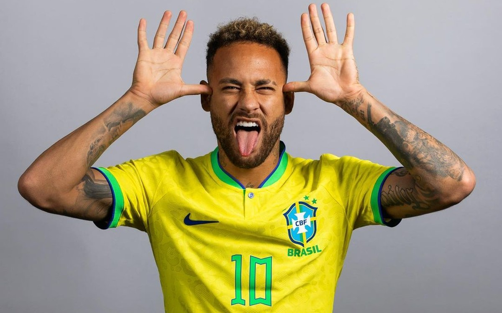

Historia do Neymar jr.
Neymar da Silva Santos Júnior, nasceu em Mogi das Cruzes, 5 de fevereiro de 1992, é um futebolista brasileiro que atua como atacante. No Barcelona, Neymar integrava o trio MSN, formado juntamente com os jogadores Lionel Messi e Luis Suárez, descrito por jornalistas como o melhor ataque dos últimos anos no futebol mundial. Com eles o jogador conquistou a Supercopa da Espanha, com o triunfo do Campeonato Espanhol, da Copa do Rei e da Liga dos Campeões da UEFA (2014–15). Atualmente joga no Al-Hilal, da Arábia Saudita. Na seleção brasileira, Neymar jr. foi destaque após a era Ronaldo fenomeno, Na copa do mundo de 2014, ele foi o destaque com quatro gols, e na mesma edição, neymar jr. sofreu uma lesão na coluna.
